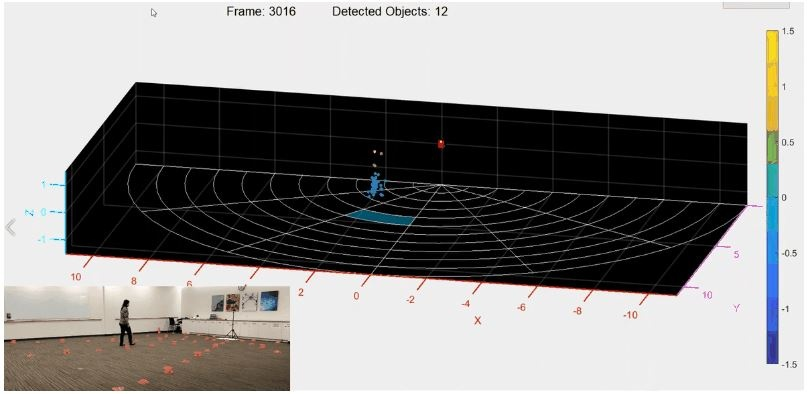

Introduction
This use case provides the sensing configuration for zone occupancy detection for a person walking in indoor environments.

Step 1: System Parameters
| Parameter | Case: Human Walking |
|---|---|
| Device Type | IWR1443 |
| Maximum range (m) | 9.62 |
| Range resolution (m) | 0.047 |
| Range accuracy (m) | - |
| Maximum velocity (m/s) | 2.05 |
| Velocity resolution (m/s) | 0.26 |
| Total Sweep Bandwidth (MHz) | 2000 |
| RCS (m2 @ range) | 1m2 @ 9.62 |
| Update rate (Hz) | 5 (limited by the digital processing chain of the OOB demo) |
| Radar Cube Size (KB) | 128 |
** TI's mmWave Traffic Monitoring Object Detection and Tracking Reference Design demonstrates additional processing that can extend the maximum trackable velocity by 3x the chirp maximum velocity
Step 2: Chirp Configuration
| 1. | Chirp Configuration | Provided in Step-3 | |
| 2. | Special considerations, Limitations etc |
| |
Step 3: OOB Demo Configuration File
| Use Case | OOB Demo Configuration File | |
| 1 | Zone detection for human walking |
Assumptions and Miscellaneous Information
| System Level Assumptions | |
|---|---|
| Starting frequency (GHz) | 77 |
| TX Antenna Gain (dB) | 9 |
| RX Antenna Gain (dB) | 9 |
| Device Type | IWR1443 |
| Number of TX Antennas used | 3 |
| Number of RX Antennas used | 4 |
Testing and Results
For details on Test Setup and Results, please refer to the Zone Occupancy Detection Experiment